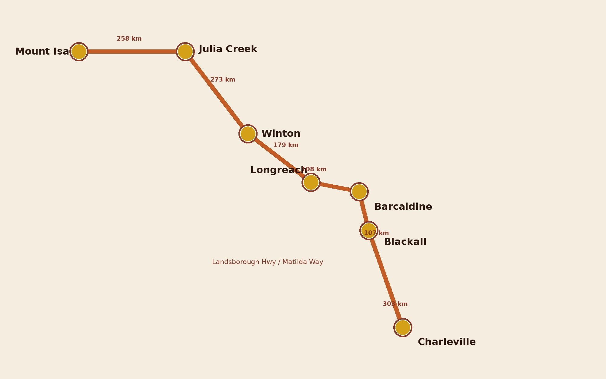

Charleville → Mount Isa • 8–22 May • ~1,400 km
Self-drive musical road trip through Outback Queensland. Seven towns, live music, big skies and sealed highways along the Landsborough Highway / Matilda Way.
Super Pass ~$249 — all 7 events + welcome + Dinner Under the Stars.

Meet fellow travellers and kick off the trail.
Music, dance and storytelling in the historic woolscour.
Legacy-themed conversations and performances.
Celebrating Slim Dusty’s 100th birthday year.
Relaxed evening with local and special guest artists.
Long-table gathering with music and food under the outback sky.
The big finale on the red dirt of Buchanan Park.
Total pure driving ~12–14 hours across free days. Mostly sealed Landsborough Highway / Matilda Way.
BP Charleville, Pie Face, IOR (diesel). Good range of services.
BP, Ampol, IOR 24-hour self-serve. EV charging available (Yurika on Shamrock St).
Fuel available in town. Top up before the longer stretches.
BP, Shell, Ampol. Multiple options and longer hours.
Winton Roadhouse, Ampol. Reliable stop before the longer run north.
Caltex (Burke Street) – diesel, unleaded, premium.
Multiple stations including Astron and major brands. Full services.
Book early for May. Most towns have powered sites, dump points and pet-friendly options. Links open external booking sites where available.
Expanded guide with official links. Check opening hours and book ahead where noted — May is a busy trail period. Most towns have free days between events for exploring.
Charleville → Blackall (303 km)
• Charleville Cosmos Centre – Stargazing, planetarium and sun viewing under some of Australia’s darkest skies. Book night sessions.
• Charleville Bilby Experience – Guided tours to meet the endangered greater bilby (nocturnal enclosure).
• WWII Secret Base – Immersive tag-along tour of the former top-secret US Air Force base (interactive exhibits and simulated B-17).
• En route: Tambo Teddies (Tambo) – Handmade sheepskin teddy workshop and store. Stop to watch them being made and take one home.
• Blackall highlights: Blackall Historical Woolscour (event venue) – Last remaining steam-powered woolscour in Australia. Guided tours available.
• Jackie Howe statue (Main St) – Commemorates the legendary blade shearer who set the 1892 record of 321 sheep in under 8 hours.
• Blackall Artesian Aquatic Centre – Naturally heated spa (36–40°C) plus 50 m pool. Ideal recovery after the drive. Low entry fee.
Blackall → Barcaldine (107 km)
• Black Stump – Historic surveying marker that gave rise to the Australian saying “beyond the black stump”.
• Blackall Sculpture Trail – Outdoor public art around town.
• Barcaldine: Australian Workers Heritage Centre – Dedicated to the lives of working Australians and the 1891 Shearers’ Strike that led to the Labor Party.
• Tree of Knowledge Memorial – Iconic site under the ghost gum where the Australian Labor Party was founded. Powerful outdoor installation.
Barcaldine → Longreach (108 km)
• Ilfracombe (en route): Lynn Cameron Machinery Mile – 800 m open-air museum of historic tractors, engines and farm machinery lining the main street. Free to wander. Details
• Longreach: Qantas Founders Museum – Birthplace story of Qantas, including the famous 747 you can walk on the wing of. Dusty Days concert venue.
• Australian Stockman’s Hall of Fame & Outback Heritage Centre – Galleries, live stockman’s show and cinematic experience celebrating outback pioneers. Allow several hours.
• Thomson River sunset cruises and station tours (book locally).
Longreach → Winton (179 km)
• Australian Age of Dinosaurs (just before Winton) – World-class fossil museum on a mesa. Collection room, preparation lab and Dinosaur Canyon. Allow 3–4 hours. Combo tickets with Lark Quarry available.
• Waltzing Matilda Centre – The only museum in the world dedicated to a song. Interactive exhibits on Banjo Paterson’s ballad, plus Qantilda Museum and local history.
• Lark Quarry Dinosaur Stampede (day trip ~110 km SW) – Only known dinosaur stampede trackway in the world. Book guided access.
Winton → Julia Creek (273 km)
• Combo Waterhole (near Kynuna) – Believed to be the billabong that inspired Waltzing Matilda. Short detour.
• Julia Creek: Julia Creek Artesian Baths – Private bathhouses at the caravan park with views of the outback. Book sunset sessions. Mineral-rich water from the Great Artesian Basin.
• At the Creek Visitor Information Centre – Meet the rare Julia Creek dunnart (live feeding sessions) and explore interactive local history exhibits.
Julia Creek → Mount Isa (258 km)
• Mount Isa: Outback at Isa – Hub with Hard Times Mine underground tour (don overalls and descend with an ex-miner guide), Riversleigh Fossil Discovery Centre, Isa Experience heritage displays, Bush Tucker tour and landscaped Outback Park.
• Lake Moondarra – Man-made lake 17 km north. Swimming, fishing (barramundi stocked), boating, picnics and birdwatching. Sealed access.
• Mount Isa Underground Hospital – WWII-era tunnels (check current access).
Get yourself, your vehicle and your caravan ready for the Outback Trail.